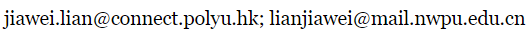

Jiawei LIAN 廉家伟Ph.D. studentDepartment of Electrical and Electronic Engineering The Hong Kong Polytechnic University School of Electronics and Information Northwestern Polytechnical University Email:  |

|
|
Short Bio
I am currently a Ph.D. student with the joint training program leading to dual Ph.D. degrees, affiliated with the Department of Electrical and Electronic Engineering, The Hong Kong Polytechnic University, Hong Kong SAR, and the School of Electronics and Information, Northwestern Polytechnical University, Xi'an, China. I received my M.Eng. degree from the School of Marine Science and Technology, Northwestern Polytechnical University, Xi'an, China, in 2022, and my B.Eng. degree from the School of Electrical Engineering and Automation, Jiangxi University of Science and Technology, Ganzhou, China, in 2019.My research interests encompass AI Safety and Trustworthy AI, with a particular focus on their applications in Large Language Models, Computer Vision, and Remote Sensing. I am dedicated to advancing these domains by ensuring that AI systems are not only effective but also safe, reliable, and trustworthy.
News
-
[09/2025] One paper accepted by Knowledge-Based Systems; one paper accepted by NeurIPS 2025.
-
[06/2024] One paper accepted by Journal of Remote Sensing.
-
[04/2023] One paper accepted by IEEE International Geoscience and Remote Sensing Symposium 2023; one paper accepted by IEEE Transactions on Geoscience and Remote Sensing.
-
[12/2022] One paper accepted by IEEE Transactions on Geoscience and Remote Sensing.
Featured Publications
(* indicates equal contribution)-
Jiawei, Lian, Jianhong Pan, Lefan Wang, Yi Wang, Shaohui Mei, and Lap-Pui Chau. "Semantic Representation Attack against Aligned Large Language Models." NeurIPS, 2025. [PDF]
-
Jiawei, Lian*, Jianhong Pan*, Lefan Wang, Yi Wang, Shaohui Mei, and Lap-Pui Chau. "PADetBench: Towards Benchmarking Physical Attacks against Object Detection." Knowledge-Based Systems, 2025. [PDF]
-
Mei, Shaohui, Jiawei Lian, Xiaofei Wang, Yuru Su, Mingyang Ma, and Lap-Pui Chau. "A comprehensive study on the robustness of deep learning-based image classification and object detection in remote sensing: Surveying and benchmarking." Journal of Remote Sensing, 2024. (First student author) [PDF]
-
Jiawei, Lian, Xiaofei Wang, Yuru Su, Mingyang Ma, and Shaohui Mei. "Contextual adversarial attack against aerial detection in the physical world." IEEE Transactions on Geoscience and Remote Sensing, 2023. [PDF]
-
Jiawei, Lian, Xiaofei Wang, Yuru Su, Mingyang Ma, and Shaohui Mei. "CBA: Contextual background attack against optical aerial detection in the physical world." IEEE International Geoscience and Remote Sensing Symposium, 2023. [PDF]
-
Jiawei, Lian, Shaohui Mei, Shun Zhang, and Mingyang Ma. "Benchmarking adversarial patch against aerial detection." IEEE Transactions on Geoscience and Remote Sensing, 2022. [PDF]
Education
-
Ph.D. student, 2024.01 - Present
The Hong Kong Polytechnic University, Hong Kong SAR, advised by Prof. Lap-Pui CHAU -
Ph.D. student, 2022.04 - Present
Northwestern Polytechnical University, Xi'an, China, advised by Prof. Shaohui MEI -
M.Eng., 2019.09 - 2022.03
Northwestern Polytechnical University, Xi'an, China, advised by Prof. Junhong HE -
B.Eng., 2015.09 - 2019.07
Jiangxi University of Science and Technology, Ganzhou, China
Honours and Awards
- Suzhou "Talent Training" Scholarship (10000￥)
- First Class Academic Scholarship (18000￥)
Academic Services
-
Reviewer
IEEE Transactions on Information Forensics and Security (TIFS)
IEEE Transactions on Geoscience and Remote Sensing (TGRS)
IEEE Journal of Biomedical and Health Informatics (JBHI)
ACM Computing Surveys (CSUR)
Information Fusion (IF)
Neural Networks (NN)
Neurocomputing (NEUCOM)
Scientific Reports (SR)
The Visual Computer (TVC)
Teaching Assistant
- EIE3124 Fundamentals of Machine Intelligence (2023/2024 Semester 2)
- EEE Three Minute Thesis (3MT) Competition 2024 - Organizing Committee (2023/2024 Semester 3)
- EIE2112 Foundation Techniques in Artificial Intelligence (2024/2025 Semester 1)
- EIE1005 Fundamental AI and Data Analytics (2024/2025 Semester 2)
| © Jiawei LIAN | Last update: 9/18/2025 |